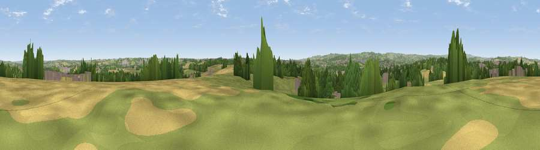

Viewpoint near Calow
#25765 in England · top 37% of its area beats it · near CalowThe view, rendered

A 360° render of this exact spot computed from the terrain model, tree cover and land cover — summer colours, afternoon light, calibrated against photographs of famous viewpoints. Real trees, hedges and buildings will differ in detail.
The panorama
Grey silhouette: terrain skyline in each direction (720 bearings, Earth curvature and refraction included). Dashed green: skyline with trees (+15 m) and buildings (+8 m) as obstacles. Blue strip: how far the ground is visible on each bearing.
Where the view opens
Wedge length = distance to the farthest visible ground on that bearing (vegetation-aware). Rings at 10, 25 and 50 km.
What fills the view
40% grassland · 25% woodland · 24% cropland · 12% built-up
Angular shares of the visible panorama (visual magnitude), not map area. Landscape diversity 0.57 (0–1 Shannon).
Key numbers
More beautiful places nearby
The staircase of upgrades: each row has a higher view potential than everything closer. Driving times are estimates from straight-line distance, calibrated against real road routing — check an actual route before setting out.
| Place | Direction | Drive | Score |
|---|---|---|---|
| Viewpoint near Shuttlewood | ENE · 5 km | ~10 min | 53.3 |
| Viewpoint near Bolsover | E · 5 km | ~12 min | 59.2 |
| Viewpoint near Bolsover | E · 5 km | ~12 min | 60.4 |
| Viewpoint near Marsh Lane | NNW · 9 km | ~17 min | 61.1 |
| Viewpoint near Alton | SW · 9 km | ~18 min | 67.7 |
| Viewpoint near Brackenfield | SSW · 13 km | ~23 min | 68.3 |
| Viewpoint near Holmesfield | NW · 15 km | ~27 min | 69.4 |
| Crich Stand | SSW · 17 km | ~30 min | 73.0 |
53.22968, -1.37566 · source: screening · position refined by local search. Computed location — check access rights before visiting.